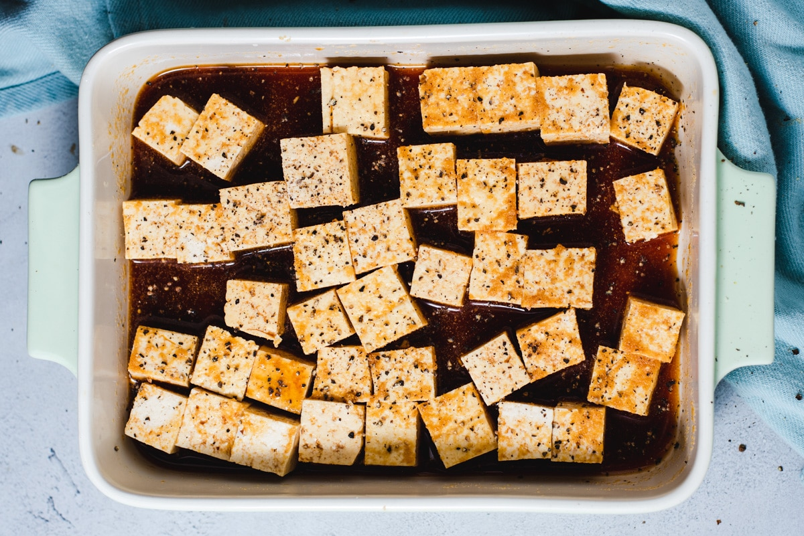

MARINATED TOFU

WHISK THE FOLLOWING TO TASTE:
- Soy Sauce
- Lemon Juice
- Sriracha
- Hoisin/BBQ
- Ketchup/Tomato Paste
POUR MIXTURE INTO FLAT CONTAINER
SLICE TOFU BLOCK INTO THIRDS
SUBMERGE TOFU IN MIXTURE AND MARINADE FOR 1-12HRS
COMBINE THE FOLLOWING IN SMALL BOWL FOR DRY SEASONING MIXTURE:
- Garlic Powder
- Onion Powder
- Black Pepper
- Ginger
- Paprika
SET MARINATED TOFU SLICES ON PARCHMENT OR TINFOIL LINED BAKING SHEET
DUST SLICES WITH HALF OF DRY SEASONING MIXTURE
BAKE AT 400 FOR .75 HR
FLIP AND DUST OPPOSTIE SIDE
FINISH BAKE FOR ANOTHER .75 HR
HOME